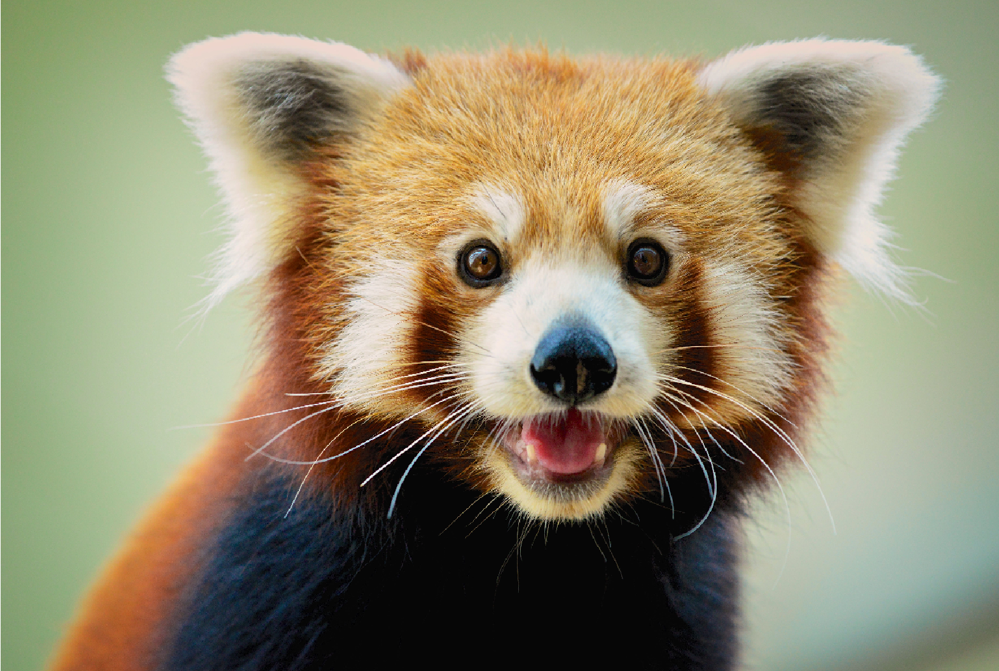

|

|
Conservation statusIndia has protected 20 areas with known or possible red panda populations in Sikkim, Arunachal Pradesh, and West Bengal such as Khangchendzonga, Namdapha and Singalila National Parks, and a coordinated conservation policy for the red panda has been developed. |
Created and Coded by Aditya Rajkumar 7A